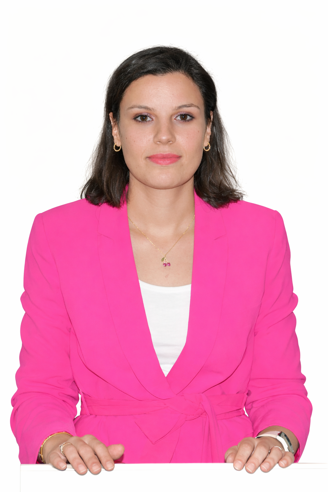

Convolutional neural networks for coastal upwelling monitoring along the Atlantic Coast of Morocco
Hanae Belmajdoub, Anass El Aouni et Khalid Minaoui.
Consulter l’article ↗
Maître de conférences assistante
Faculté des Sciences Juridiques, Économiques et Sociales–Souissi
Université Mohammed V de Rabat
Laboratoire de Recherche en Informatique et Télécommunications
Faculté des Sciences de Rabat
Hanae Belmajdoub est enseignante-chercheuse à la FSJES-Souissi, Université Mohammed V de Rabat, et membre du LRIT. Elle est titulaire d’un doctorat en informatique et télécommunications, soutenu le 2 décembre 2023 à la Faculté des Sciences de Rabat.
Ses travaux portent sur l’intelligence artificielle, l’apprentissage profond et le traitement des images et des données spatio-temporelles. Ils s’intéressent notamment à la détection, à la segmentation et au suivi de l’upwelling côtier à partir de données satellitaires, ainsi qu’aux applications de l’IA à la santé et à l’analyse de données.
Ses activités pédagogiques comprennent l’algorithmique, la programmation, les compétences numériques, les technologies web et les outils d’analyse de données. Elle participe à l’encadrement de projets de fin d’études et aux activités scientifiques du laboratoire.
Hanae Belmajdoub, Anass El Aouni et Khalid Minaoui.
Consulter l’article ↗Hanae Belmajdoub, Khalid Minaoui, Anass El Aouni, Karim Hilmi, Rachid Saadane et Abdellah Chehri.
Consulter l’article ↗